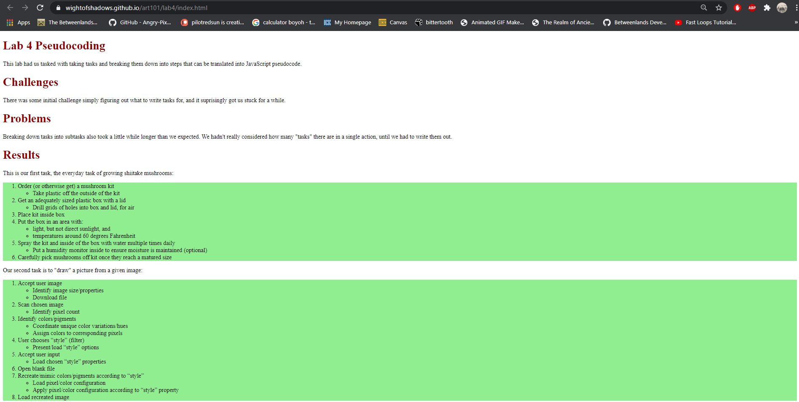

This lab had us tasked with taking tasks and breaking them down into steps that can be translated into JavaScript pseudocode.
There was some initial challenge simply figuring out what to write tasks for, and it suprisingly got us stuck for a while.
Breaking down tasks into subtasks also took a little while longer than we expected. We hadn't really considered how many "tasks" there are in a single action, until we had to write them out.
This is our first task, the everyday task of growing shiitake mushrooms:
Our second task is to "draw" a picture from a given image:
The second task in pseudocode:
// Accept user image
// Identify image size/properties
// Download file
// Scan chosen image
// Identify pixel count
// Identify colors/pigments
// Coordinate unique color variations/hues
// Assign colors to corresponding pixels
// User chooses “style” (filter)
// Present/load “style” options
// Accept user input
// Load chosen “style” properties
// Open blank file
// Recreate/mimic colors/pigments according to “style”
// Load pixel/color configuration
// Apply pixel/color configuration according to “style” property
// Load recreated image
A picture of the resulting web page:
